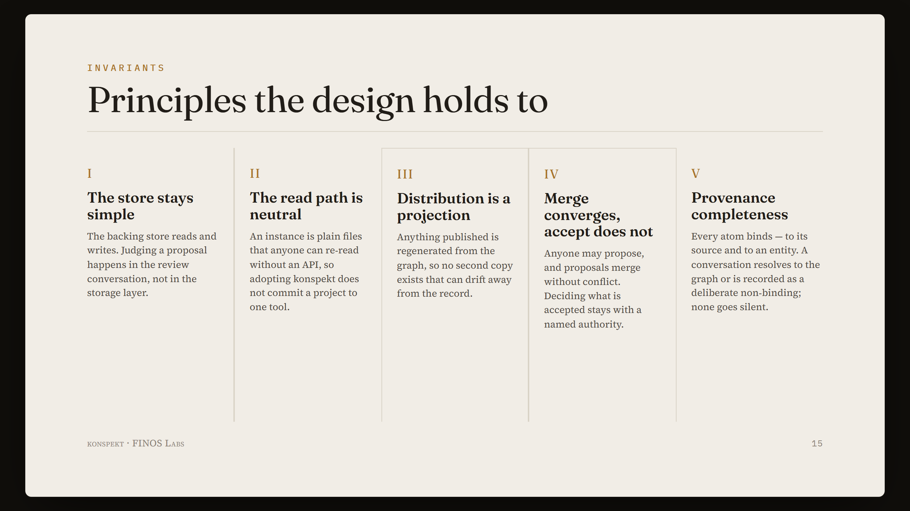

[COVER images/invariants.png — set as the article cover via LinkedIn's cover button]

konspekt keeps the state of an AI-driven project as a typed graph: goals, tasks, decisions, and the verbatim exchanges they came from. Last week's work put that graph in front of you — a local UI, and an IntelliJ plugin — and let you accept and resolve from it. This week's work is less visible, and for anyone who has to account for what an AI did, it matters more: konspekt added an invariant that closes the gap where a conversation produces nothing the record can see.
The failure is specific. You work through something with a model across a long exchange. Decisions are made, directions are set. The session ends and no atom was extracted, so the source text is referenced by nothing and the graph shows no sign the work happened. The record is not wrong; it is silent. For a project whose purpose is an auditable account of AI-driven work, a silent conversation is the one outcome the record must not allow.
Provenance completeness is that guarantee. An atom is bound when it carries a resolvable reference to an entity: its provenance anchors it to a source, and it attaches to the graph through at least one entity — its own identity for a node, an edge endpoint for an edge. A conversation is bound when the atoms drawn from it bind to a live entity. A conversation may instead be recorded as unbound — a marker that a human declined to bind it — which is itself a bound atom. So a persisted conversation resolves to entities, or to an explicit, auditable record that it was left unbound. There is no third state in which work happened and the graph shows nothing.
Binding checks that an atom references an entity that exists, the way a foreign key requires a valid parent. It says nothing about whether the atom is correct or worth keeping — that judgment is acceptance, which stays human and lives in the review conversation. Because binding is integrity and acceptance is judgment, the two do not collide: the maintainer may propose a bound atom on its own; only accepting it remains a human move.
Completeness is enforced the way a confidence value is: it is mandatory on every proposed atom, and the extraction layer enforces it. An atom with no binding is malformed and never becomes well-formed. It is deliberately not a gate at save time. A save-time gate that refused to write unbound atoms would block a proposal until it was bound, which contradicts another rule of the design — that review never blocks the save. Enforcing at extraction gives the same guarantee while leaving the save path open: proposals, already bound, are written and dispositioned later.
Extraction keeps every proposed atom bound, but it cannot see a conversation that produced no atom at all: there is no file to check. A binding audit closes that gap from the other side, and under binding: required it breaks the build. The check is a CI workflow, .github/workflows/konspekt-binding-audit.yml, which runs tools/binding-audit.mjs on every push to main and every pull request. The script walks each commit from the recorded baseline to HEAD; for any commit that changed a surface outside .konspekt/instance/, it looks for a row in the changed-code log (.konspekt/instance/changes/changed.md) that binds that change to an entity. A commit that changed the project but binds to nothing fails the job, and the build goes red. This is detection at the commit boundary, not a persist gate: it reports after the fact and never blocks a save, so an uncaptured conversation is caught in CI rather than stopped at the moment of writing.
Whether an unbound conversation is a legal state is set per instance.
Absent the setting, optional is the default, so every existing instance stays valid. konspekt's own project now runs in required, and its operating loop is written down in the instance's operating policy (.konspekt/OPERATING.md): load the instance, then bind before any durable work, then propose and persist. Binding is the second step of that loop. Before any durable work, the maintainer asks which entity the conversation attaches to: an existing entity by its id, or a new one of a stated type — an investigation by default for an exploratory start. A conversation carries one active entity at a time; when the topic moves, the maintainer proposes a switch, and each span of provenance keeps the entity it was under. No session begins unbound.
Provenance completeness is the fifth invariant konspekt's design holds to, alongside four already in the specification: the store stays simple, the read path is neutral, distribution is a projection, and merge converges while acceptance does not. The invariant is defined in the spec (spec/architecture/BINDING.md); how and when a human is asked which entity a conversation attaches to, and the commit-boundary audit, are host behavior, so both can differ per instance. The project deck now carries a dedicated Binding slide (invariant V) that shows the three layers together: the ask at the open, the extraction constraint, and the audit.
All of it is on main: github.com/finos-labs/konspekt
#AI #KnowledgeGraphs #Accountability #OpenSource #FINOS #konspekt